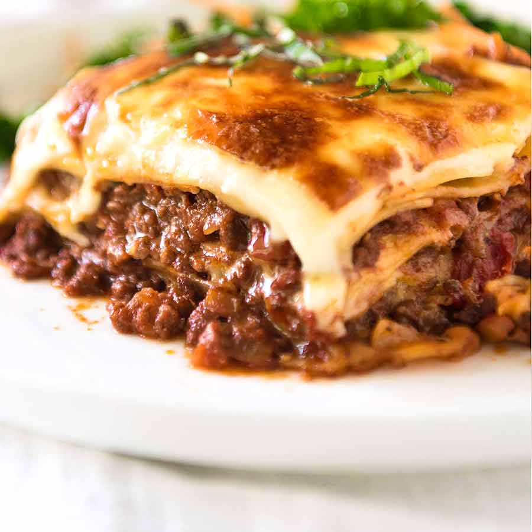

Home
Lasagna

Description
Lasagne, also UK: singular lasagna, are a type of pasta, possibly one of the oldest types, made of very wide, flat sheets. Either term can also refer to an Italian dish made of stacked layers of lasagne alternating with fillings such as ragù (ground meats and tomato sauce), vegetables, cheeses (which may include ricotta, mozzarella, and parmesan), and seasonings and spices, like Italian seasoning, such as garlic, oregano and basil. The dish may be topped with grated cheese, which becomes melted after baking. Typically cooked pasta is assembled with the other ingredients and then baked in an oven. The resulting baked pasta is cut into single-serving square portions.
There are 3 components to making lasagna:
- The meat sauce;
- The white sauce - creamy and thick, but no cream required!
- Assembling and baking.
So without further ado, lets get cooking!
Ingredients
Ragu Bolognese
- 1 tbsp olive oil
- 1 onion,finely chopped (white, yellow or brown)
- 1 medium carrot, finely diced
- 1 rib / stick of celery, finely diced
- 2 garlic cloves, minced
- 1 kg / 2 lb beef mince (ground beef)
Cheese Sauce
- 60g / 4 tbsp butter
- 1/2 cup (75g) flour
- 4 cups (1 litre) milk (I use low fat)
Lasagna (Putting it Together)
- 350g/ 12 oz fresh lasagna sheets (or 250g/8oz dried)
- 1 1/2 cup (150g) shredded mozzarella cheese
- Finely chopped basil or parsley, for garnish (optional)
Methodology
Ragu Bolognese
- Heat oil in a large heavy based pot over medium heat. Add garlic, onion, celery and carrots. Cook for 10 minutes until softened and sweet - they should not brown (if they do, turn heat down).
- Add beef, turn heat up and cook the beef, breaking it up as you go.
- Once the beef has all turned brown, add the remaining Ragu ingredients EXCEPT the sugar.
- Stir then adjust the heat so it is bubbling very gently. Place the lid on and cook for 1.5 - 2 hours, stirring every now and then, then remove the lid and simmer for 30 minutes.
- The ragu is ready when the meat is really tender and the sauce has thickened and is rich - see video for consistency. Adjust salt and pepper to taste, and add sugar if required.
Cheese Sauce
- I
- can't
- be
- bothered
Assemble
- Preheat oven to 180°C/350°F.
- Spread over 2 1/2 cups of Ragu (enough to cover sheets), then drizzle over 1 cup of Cheese Sauce.
- Top with lasagna sheets. Spread with another 2 1/2 cups of Ragu, then 1 cup of Cheese Sauce. Top with lasagna sheets then repeat 1 more time.
- Top with a 4th layer of lasagna sheets, then pour over the remaining Cheese Sauce.
- Sprinkle with Mozzarella, then bake for 25 minutes or until golden and bubbling.
- Stand for 5 to 10 minutes before cutting and serving, garnished with basil or parsley if desired.